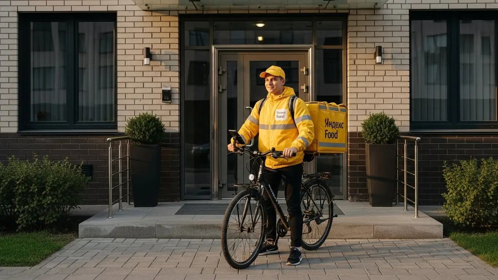
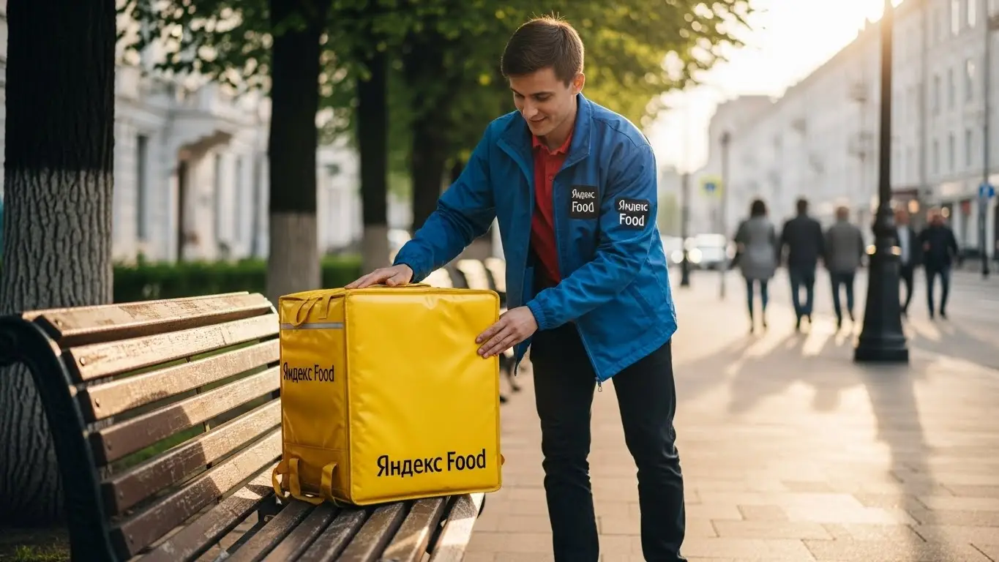
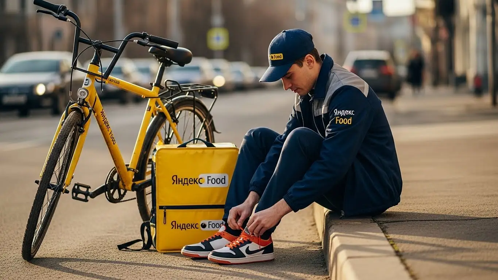

Работа курьером Яндекс Еда в Краснодаре 2025-2026: доход и условия

- Работа курьером Яндекс Еды в Краснодаре: для кого эта вакансия и что вы получите
- Сколько вы будете зарабатывать курьером в Краснодаре: калькулятор дохода и разбор выплат
- Реальный заработок курьера в Краснодаре: смены и месячный доход
- График работы и форматы занятости
- Требования к кандидату и документы
- Самозанятость, налоги и юридическая чистота
- Пошаговое оформление и первый выход на линию в Краснодаре
- Пешком, на вело или на авто: что выгоднее в Краснодаре
- Районы, маршруты и «топовые» зоны заказов в Краснодаре
- Безопасность, страховка, штрафы и оплата простоя
- Плюсы и возможные минусы работы курьером в Краснодаре
- Реальные истории и отзывы курьеров из Краснодара
- Ответы на главные вопросы о работе курьером Яндекс Еды в Краснодаре
- Короткие ответы на главные вопросы
- Итоги и ваш следующий шаг
Все города
Здорово, будущий коллега! Думаешь крутить педали или жечь бензин, доставляя заказы Яндекс Еды и Яндекс Лавки? И главный вопрос, который свербит в голове: сколько реально останется в кармане после пробок на Северной или Красной, штрафов и расходов на транспорт? Это не рекламная замануха, а честный разговор о том, как выжить и заработать курьером именно в нашем южном городе, где трафик бывает злее летнего солнца.
Потому что красивые цифры в рекламе — это одно, а реальность краснодарских улиц — совсем другое. Никто не расскажет тебе заранее про реальные расходы на бензин или ремонт вела, про то, как рейтинг влияет на количество заказов, и почему доставка в Музыкальный микрорайон и на Гидрострой — это две большие разницы по времени и деньгам. Чтобы сразу видеть актуальные цифры, можно изучить детальный калькулятор и ответы на частые вопросы — вся официальная информация про работу курьером Яндекс Еда в Краснодаре собрана на специальной странице. Большинство новичков в Краснодаре наступают на одни и те же грабли: берут невыгодные заказы, теряют время в глухих пробках и в итоге разочаровываются, не заработав и половины обещанного.
Здесь мы всё разберём по косточкам. Посчитаем, сколько чистыми приносят пеший, вело- и автокурьер в наших реалиях. Выясним, в каких районах Краснодара больше всего заказов и денег, а куда лучше не соваться в час пик. Я покажу на примерах, как летняя жара или зимний ливень влияют на заработок, расскажу, за что реально штрафуют и как этого избежать, и честно сравним условия с другими доставками, которые работают у нас в городе.
Меня зовут Алексей. Я сам не один год откатал с желтым рюкзаком по Краснодару, а сейчас у меня свой небольшой таксопарк-партнёр. Так что я знаю всю эту кухню изнутри — и со стороны курьера, и со стороны партнёра. Хватит болтовни, давай к делу. Сейчас всё разложу по полочкам, без воды и рекламной шелухи, чтобы ты сразу понял, стоит ли игра свеч именно для тебя.
Держи короткий навигатор по статье, чтобы сразу найти самое важное.
Что ты точно узнаешь из этого разбора по Краснодару
В этой статье ты ТОЧНО узнаешь:
- Сколько реально можно заработать в Краснодаре за смену на авто, велосипеде и пешком, с учётом пробок и расходов?
- В каких районах (ФМР, ГМР, Центр) больше всего заказов и выше коэффициенты, а куда лучше не соваться в час пик?
- Как погода (жара, ливень) и время суток влияют на доход и как ловить самые «жирные» заказы?
- За что на самом деле штрафуют и снижают рейтинг, и как этого избежать новичку?
- Что такое «оплата простоя» и как она защищает твой доход, если заказов вдруг стало мало?
- Как за 10 минут оформить самозанятость, сколько платить налогов и почему это проще, чем кажется?
А если тебе некогда читать всю статью — переходи сразу к заключению, где ты найдёшь короткие ответы на все эти вопросы и указания, в каких разделах искать подробности.
А для начала — наглядная инфографика с ключевыми цифрами по работе в Краснодаре.
Работа курьером в Краснодаре: ключевые цифры
Работа курьером Яндекс Еды в Краснодаре: для кого эта вакансия и что вы получите
Кому подойдёт эта работа в Краснодаре
Давай начистоту: эта работа не для всех, но для многих — настоящая находка. В Краснодаре курьером в Яндекс Еде часто идут студенты, которым нужно совмещать подработку с учёбой в КубГУ или Политехе. График полностью свободный: можешь выходить на пару часов после пар и зарабатывать на свои расходы, не прося у родителей. Это идеальный вариант и для тех, кто ищет дополнительный доход к основной зарплате — несколько вечерних смен в неделю или плотные выходные дают ощутимую прибавку к бюджету.
Огромный плюс в том, что здесь не требуют опыта. Вообще. Никто не будет смотреть на твою трудовую книжку. Главное — быть ответственным, ориентироваться в городе и иметь смартфон. Это отличный старт, если ты никогда не работал. Также это хороший вариант для курьеров на своем авто, которые хотят использовать машину по максимуму, не связываясь с такси. А если тебе просто нужны деньги здесь и сейчас, то ежедневные выплаты — это то, что нужно.

Главные преимущества для жителей районов Фестивальный, Гидростроителей, Юбилейный
Одна из главных фишек работы в Яндекс Еде — возможность выполнять заказы в своём районе. Живёшь ты, например, на Фестивальном (ФМР) — можешь выбрать слоты в приложении Яндекс Про именно там. Не нужно тратить час-полтора, чтобы добраться до точки старта через вечные краснодарские пробки на Тургенева или Северной. Ты выходишь из дома и через пять минут уже на линии, принимаешь первый заказ из местного ресторана.
То же самое касается и других крупных спальных районов. В районе Гидростроителей (ГМР) или в Юбилейном (ЮМР) полно и жилых домов, и заведений, поэтому спрос есть всегда. Ты отлично знаешь все дворы, срезы и короткие пути, а значит, будешь доставлять заказы быстрее и, как следствие, зарабатывать больше. Работая рядом с домом, ты экономишь не только время, но и силы, и деньги на проезд.
Краткое обещание по доходу и условиям
Если говорить о деньгах в Краснодаре, то цифры реальные. Активный курьер на автомобиле за полную 8–10 часовую смену может заработать 3500–4500 рублей и больше, особенно в пиковые часы и плохую погоду. Пеший или велокурьер за 4–6 часов подработки спокойно получает 1500–2500 рублей. В месяц при полной занятости у водителей выходит и 80 000–90 000 рублей. Главное — это ежедневные выплаты: деньги приходят на карту, не нужно ждать конца месяца.
Условия максимально простые: свободный график, который ты сам составляешь в приложении, и отсутствие начальника над душой. Начать можно без опыта, всему научат на коротком онлайн-инструктаже. Ты сам решаешь, когда и сколько работать. Нужны деньги срочно — вышел на линию. Хочешь отдохнуть — просто не берёшь смены.
Сколько вы будете зарабатывать курьером в Краснодаре: калькулятор дохода и разбор выплат
Из чего складывается доход курьера
Твой заработок — это не просто фиксированная ставка, он складывается из нескольких частей. Во-первых, есть базовая оплата за каждый выполненный заказ. Во-вторых, к ней добавляется плата за расстояние — чем дальше везти, тем больше денег. В-третьих, в часы пик (обед, ужин, выходные) и в плохую погоду включаются повышающие коэффициенты. Карта в приложении «Яндекс Про» окрашивается в яркие цвета, и в этих зонах стоимость заказа может вырасти в 1.5–2 раза.
Кроме этого, есть бонусы за выполнение определённого количества заказов в день или неделю. Чаевые от клиентов полностью твои, сервис не берёт с них комиссию. Но самое важное, что отличает Яндекс Еду от многих других сервисов, — это оплата простоя. Если ты вышел на плановый слот, а заказов мало, тебе всё равно начислят минимальную гарантированную сумму. Для курьеров на общественном транспорте также может действовать компенсация проезда. То есть, ты защищён от ситуаций, когда зря потратил время.
Как пользоваться калькулятором дохода
На сайте есть специальный калькулятор, который поможет прикинуть твой возможный заработок. Пользоваться им элементарно. Сначала выбери свой город — Краснодар. Затем укажи, как планируешь доставлять: пешком, на велосипеде или на своём авто.
Дальше двигай ползунки: сколько часов в день и сколько дней в неделю ты готов работать. Система на основе средних данных по городу покажет тебе примерный доход за день и за месяц. Это, конечно, не стопроцентная гарантия, ведь реальная зарплата будет зависеть от твоей скорости и активности, но как ориентир — вещь очень полезная. Помогает понять, на что можно рассчитывать.
Прикинь свой возможный доход в Краснодаре
8 часов
5 дней
Примерный доход в месяц:
*Расчёт основан на средней ставке по городу. Реальный доход зависит от спроса, бонусов, погоды и вашего графика.
Чтобы увидеть самые актуальные условия, посмотреть детальный FAQ и заполнить анкету, загляни на официальную страницу — работа курьером Яндекс Еда в твоём городе. Там собрана вся информация для старта.
Примеры расчёта для пешего, вело- и авто‑курьера в Краснодаре
Разберём на конкретных примерах, чтобы было понятнее.
- Пеший курьер в центре. Ты работаешь в районе улицы Красной, где много кафе и офисов. Выходишь на 4 часа вечером после учёбы. Заказы короткие, но их много. За смену ты можешь сделать 10–12 заказов и заработать около 1600–2000 рублей.
- Курьер на велосипеде между спальниками. Твой маршрут — между Фестивальным и Юбилейным. Ты быстрее пешего, пробки тебе не страшны. За 6-часовую смену в выходной день ты спокойно выполнишь 15–18 заказов, и твой доход составит 2200–2800 рублей. Плюс — отличная кардиотренировка.
- Курьер на автомобиле по всему городу. Ты работаешь полный день, 8–10 часов. Берёшь заказы по всему Краснодару, включая дальние доставки в район Гидростроителей или даже в пригород. В дождь или в вечерние пробки твой заработок взлетает за счёт коэффициентов. В такой день можно получить 4000–5000 рублей и больше, особенно если попадаются крупные заказы из гипермаркетов.
Реальный заработок курьера в Краснодаре: смены и месячный доход
Диапазон дохода для подработки и полной занятости
А теперь о главном — о деньгах. Разберёмся, сколько реально зарабатывает курьер в Краснодаре. Без красивых обещаний, только цифры из практики. Твой доход напрямую зависит от того, как ты решил работать: наскоками по паре часов или полный день, и на чём передвигаешься.
Если для тебя это подработка, например, 2–4 часа в день после учёбы или основной работы, то расклад примерно такой. Пеший курьер в центре, где много заказов на короткие дистанции, сделает 800–1500 рублей. Велокурьер за то же время заработает больше, около 1200–2000 рублей, потому что успевает покрыть большее расстояние, например, между Фестивальным (ФМР) и центром. Курьер на своем авто на подработке может рассчитывать на 1500–2500 рублей, но здесь нужно вычитать расходы на бензин.
При полной занятости, то есть 8–10 часов на линии, цифры совсем другие. Пеший курьер, работая в плотной застройке вроде Юбилейного (ЮМР), может зарабатывать 2500–3500 рублей в день. Велосипедист за полный день сделает 3000–4500 рублей. Самый высокий доход у автокурьеров — от 4000 до 7000 рублей в день, особенно если брать дальние заказы и работать в часы пик. В месяц при графике 5/2 усердный автокурьер в Краснодаре может выходить на 80 000–120 000 рублей «грязными», то есть до вычета расходов на топливо и налога для самозанятых.
Как район, время суток и погода влияют на доход
Запомни три кита, на которых держится твой заработок: место, время и погода. В Краснодаре это работает безотказно. Пиковые часы — это обед (примерно с 12:00 до 15:00) и ужин (с 18:00 до 21:00). В это время люди массово заказывают еду из ресторанов, например, через Яндекс Еду, и карта в приложении «Яндекс Про» начинает «гореть».
На ней появляются зоны с повышенными коэффициентами. Работать в такой фиолетовой зоне выгоднее в 1.5–2 раза. Пятница вечер и все выходные — это один большой пик.
Погода в Краснодаре — твой лучший друг. Летом, когда на улице пекло под +40°C, никто не хочет выходить из-под кондиционера. Заказов становится вал, а курьеров на линии меньше. То же самое, когда льёт знаменитый краснодарский ливень. В такую погоду коэффициенты взлетают до небес, а клиенты чаще оставляют хорошие чаевые из благодарности.
Район тоже решает. Сидеть в спальнике типа Гидростроя (ГМР) в 11 утра — гиблое дело. А вот находиться в это время у бизнес-центров на улице Северной или рядом с фудкортом в ТРЦ «Галерея Краснодар» — совсем другой разговор. Изучай карту, смотри, где сосредоточены рестораны и офисы, и будь там в нужное время.
Советы по увеличению заработка от опытных курьеров
Чтобы зарабатывать больше, не обязательно работать сутками. Нужно работать с головой. Во-первых, активно используй плановые слоты. Когда ты заранее выбираешь время и зону работы, сервис часто предлагает бонусы и гарантированный минимальный доход. Это твоя страховка от простоя. Самые выгодные слоты — вечерние и в выходные дни.
Во-вторых, не гоняйся за одним заказом через весь город, даже если он кажется дорогим. Часто выгоднее сделать 3–4 коротких заказа в зоне высокого спроса, чем один длинный. Учись видеть «горячие» зоны на карте в «Яндекс Про» и старайся работать внутри них. Например, в центре Краснодара можно эффективно работать пешком или на велосипеде, а на машине туда в час пик лучше не соваться — все деньги на бензин в пробках сожжёшь.
И ещё один совет: будь мультимодальным, если есть возможность. У меня есть знакомые ребята, которые доезжают на машине до границы плотной застройки, например, до ФМР, паркуются и дальше несколько часов работают на велосипеде или самокате. Это позволяет совместить скорость и манёвренность, избегая пробок в центре, и в итоге привозить домой больше денег.
Вот реальный кейс от одного из моих водителей. Парень работает водителем-курьером на авто полный день. В обычный солнечный вторник он зарабатывает около 4500 рублей. Но когда в прошлую пятницу пошёл сильный дождь, он вышел на линию вечером и за 5 часов сделал 5000 рублей. Он специально работал в спальных районах (КМР, ГМР), куда люди заказывали большие ужины из центральных ресторанов через Яндекс Еду. Коэффициенты были х2, плюс щедрые чаевые.
Сравнение дохода в Краснодаре по типу занятости
| Тип курьера | Подработка (2–4 часа/день) | Полная занятость (8–10 часов/день) | Месячный доход (примерно, 22 смены) |
|---|---|---|---|
| Пеший | 800 – 1 500 ₽ | 2 500 – 3 500 ₽ | 55 000 – 77 000 ₽ |
| Велокурьер | 1 200 – 2 000 ₽ | 3 000 – 4 500 ₽ | 66 000 – 99 000 ₽ |
| Автокурьер | 1 500 – 2 500 ₽ | 4 000 – 7 000 ₽ | 88 000 – 154 000 ₽ (до вычета расходов и налога) |
В итоге, твой реальный заработок в Краснодаре — не случайность, а результат планирования. Ключевые факторы — твой транспорт, умение ловить пиковые часы и непогоду, а также правильный выбор района. В первые недели пробуй разные зоны и время, веди свою статистику, чтобы понять, где и когда работать выгоднее всего именно для тебя. Это поможет получать стабильный доход.
График работы и форматы занятости
Подработка после учёбы или основной работы
Свободный график — это главное преимущество, которое привлекает в эту сферу. Ты действительно сам себе начальник и решаешь, когда работать. Это идеально подходит для совмещения.
Например, у меня работает студент из КубГТУ. Он живёт в районе улицы Ставропольской, учится в первую смену. После пар, примерно в 16:00, он берёт велосипед и выходит на 4-часовой слот в своём районе. За вечер спокойно делает 1500–1800 рублей. В неделю у него выходит 7–9 тысяч, что для студента отличная прибавка к стипендии. Он не привязан к офису и может пропустить день, если нужно готовиться к экзамену.
Другой пример — бухгалтер, 35 лет, работает в офисе на ФМР с 9 до 18. У него есть машина. Чтобы быстрее закрыть ипотеку, он три-четыре раза в неделю после работы выходит на линию на 3 часа, а также катается почти всю субботу. В основном развозит заказы из ресторанов и гипермаркетов по Фестивальному, Юбилейному и соседним районам. За неделю такая подработка приносит ему дополнительно 10 000–15 000 рублей.
Полная занятость: как выглядит типичный день курьера
Если ты решил сделать доставку своей основной работой, будь готов к тому, что это полноценный труд, который требует дисциплины. Типичный день курьера на авто в Краснодаре, который хочет хорошо заработать, выглядит примерно так. Он выходит на линию около 10:00, чтобы успеть выполнить утренние заказы из магазинов и «Яндекс Лавки», пока город не встал в пробки. К 12:00 он смещается ближе к центру или к крупным ТРЦ вроде «СБС Мегамолл» или «OZ Молл», где в обеденный пик начинается вал заказов из ресторанов. С 15:00 до 17:00 обычно бывает затишье — это время можно использовать для обеда, заправки или выполнения одного-двух дальних, но дорогих заказов. А с 18:00 начинается вечерний «час-пик», который длится до 21:00–22:00. В это время курьер работает по густонаселённым спальным районам — Комсомольскому (КМР), Гидрострою (ГМР), доставляя ужины. За день он делает 2-3 коротких перерыва, чтобы перекусить и отдохнуть.
Как планировать слоты и выходы через приложение «Яндекс Про»
Вся твоя работа организуется через приложение «Яндекс Про». Там есть два основных режима: свободный выход и плановые слоты. Свободный — это когда ты в любой момент нажал кнопку «На линию» и начал получать заказы. Удобно, но доход непредсказуем.
Плановые слоты — это твой инструмент для стабильного заработка. Ты заранее выбираешь в расписании день, время (например, с 18:00 до 22:00) и конкретный район, где будешь работать. За это сервис часто даёт бонусы или гарантирует минимальную оплату за час, даже если заказов будет мало. Это твоя подушка безопасности.
Очень важно не опаздывать на плановый слот. Приложение заранее пришлёт уведомление, что пора выезжать в выбранную зону. Если ты приедешь вовремя и будешь на месте в начале слота, твой рейтинг и уровень приоритета будут расти. А чем выше приоритет, тем больше хороших и дорогих заказов ты будешь получать. Поэтому относись к слотам как к настоящей смене на работе — дисциплина здесь напрямую влияет на деньги.
Был у меня парень, который поначалу работал только на свободных выходах. Выходил, когда вздумается, и жаловался, что заказов мало. Я посоветовал ему попробовать планировать слоты на три дня вперёд, выбирая вечернее время в своём районе. Через неделю он пришёл совсем с другим настроением: доход стал стабильнее, появились бонусы, и он перестал тратить время на пустое ожидание.
В общем, график действительно гибкий, но чтобы он приносил деньги, к нему нужно подходить с умом. Для начала попробуй свободные выходы, чтобы освоиться, а потом переходи на плановые слоты в пиковые часы. Это самый верный путь к стабильному и высокому доходу в Яндекс Доставке.
Требования к кандидату и документы
Многие думают, что для работы курьером нужен какой-то опыт или кипа бумаг. На деле всё гораздо проще. Никто не будет смотреть на твой диплом или трудовую книжку. Главное — твоя ответственность, умение ориентироваться в городе и наличие смартфона. Давай по порядку разберём, какие условия и требования от тебя потребуются.
Возраст, гражданство и базовые условия
Начнём с основ. Чтобы стать курьером Яндекс Еды, тебе должно быть полных 18 лет. Это строгое правило, связанное с материальной ответственностью и полной дееспособностью. По гражданству тоже всё чётко: нужен паспорт гражданина РФ или одной из стран ЕАЭС (Беларусь, Казахстан, Армения, Киргизия).
Что касается физической формы, здесь всё зависит от выбранного способа доставки. Если планируешь работать пешим курьером, будь готов много ходить. Для велокурьера важна выносливость, особенно в жару, которая в Краснодаре не редкость. Автокурьеру физически проще, но требуется максимальная концентрация на дороге. Никто не требует олимпийской подготовки, достаточно быть в нормальной физической форме и не иметь медицинских противопоказаний к нагрузкам.
Какие документы нужны для работы курьером
Для этой подработки не нужен предыдущий опыт, но собрать минимальный пакет документов всё же придётся. Список небольшой, и сделать это можно за один день. Вот что нужно подготовить заранее, чтобы оформление прошло максимально быстро:
- Паспорт. Основной документ для подтверждения личности и заключения договора. Нужен оригинал для регистрации.
- ИНН (Идентификационный номер налогоплательщика). Он необходим для оформления самозанятости и уплаты налогов. Если ты не помнишь свой номер, его легко можно узнать за пару минут на сайте ФНС.
- Именная банковская карта. На неё будут приходить выплаты — твои заработанные деньги. Важно, чтобы карта была оформлена именно на тебя. Подойдёт карта любого российского банка.
- Медицинская книжка. Так как ты будешь работать с доставкой еды из ресторанов и кафе, медкнижка часто является обязательным требованием. Если её нет, будь готов оформить. Это гарантия безопасности и для тебя, и для клиента.
Как видишь, ничего сверхъестественного. Стандартный набор для любого официального трудоустройства. Чем быстрее подготовишь эти документы, тем быстрее выйдешь на линию и получишь первый доход.
Можно ли работать с 16 лет и какие есть альтернативы
Часто спрашивают, можно ли устроиться в Яндекс Еду с 16 или 17 лет. Отвечаю честно: нет, нельзя. Сервис заключает договоры только с совершеннолетними, то есть с 18 лет. Это связано с полной юридической и материальной ответственностью за заказы, а также с финансовыми операциями. Пытаться обойти это правило бессмысленно — система просто не пропустит анкету.
Если тебе ещё нет 18, но очень хочется подработать, не стоит отчаиваться. Рассмотри другие варианты, которые доступны подросткам. Например, можно раздавать листовки, работать промоутером на акциях или помогать в небольших местных заведениях, где требования могут быть мягче. Это тоже опыт и возможность заработать свои первые деньги, пока ждёшь совершеннолетия.
Из практики: у меня был случай с 19-летним парнем, который только вернулся из армии. Он пришёл, чтобы устроиться автокурьером. Все документы — паспорт, ИНН, права — у него были в идеальном порядке. Медкнижку сделал за два дня. В итоге от момента, как он заполнил анкету, до первого заказа прошло меньше трёх суток. За первую неделю, работая по 6-7 часов в день в районе Гидростроителей, он заработал около 15 000 рублей. Это отличный пример того, как простая подготовка ускоряет старт.
Как видишь, условия и требования к кандидатам вполне адекватные и понятные. Главное — возраст от 18 лет и наличие базовых документов. Мой совет: перед заполнением анкеты проверь, всё ли у тебя на руках, особенно ИНН и актуальность медкнижки. Это сэкономит тебе время и нервы.
Самозанятость, налоги и юридическая чистота
Новичков часто пугают слова «самозанятость» и «налоги». Кажется, что это сложно, муторно и связано с бумажной волокитой. Забудь эти стереотипы. Формат самозанятости (или налог на профессиональный доход — НПД) был создан как раз для того, чтобы максимально упростить легальную работу для таких людей, как мы — курьеров, таксистов, фрилансеров. Это самый простой способ работать официально и спать спокойно.
Почему курьеры Яндекс Еды работают как самозанятые
Работа через самозанятость — это прямой договор с сервисом, который даёт тебе несколько важных преимуществ. Во-первых, это твой официальный доход. Ты можешь без проблем взять кредит в банке или подтвердить свой заработок для получения визы, потому что все поступления легальны. Во-вторых, никакой сложной бухгалтерии. Тебе не нужен бухгалтер, не нужно сдавать декларации и отчёты. Всё происходит автоматически через приложение.
По сути, самозанятость — это твой статус независимого исполнителя. Ты не сотрудник в штате, а партнёр сервиса. Это даёт тебе свободный график — ты сам решаешь, когда и сколько работать. При этом обеспечивается полная юридическая чистота твоих доходов. Ты работаешь «в белую», и это защищает тебя от любых вопросов со стороны налоговой.
Как за 10 минут оформить самозанятость через «Мой налог»
Регистрация статуса самозанятого занимает не больше времени, чем заказ пиццы. Весь процесс проходит онлайн, никуда ходить не нужно. Вот простая пошаговая инструкция:
- Скачай приложение. Зайди в Google Play или App Store и найди официальное приложение ФНС «Мой налог».
- Начни регистрацию. Открой приложение и выбери самый простой способ — «Регистрация по паспорту РФ».
- Отсканируй паспорт. Наведи камеру телефона на главный разворот паспорта. Приложение само распознает все данные.
- Сделай селфи. Система попросит тебя сфотографироваться, чтобы подтвердить личность. Просто моргни на камеру, когда попросят.
- Подтверди данные. Проверь информацию и подтверди регистрацию. Выбери регион деятельности — Краснодарский край.
Вот и всё. Через 5–10 минут ты получишь уведомление, что официально стал плательщиком налога на профессиональный доход. Также зарегистрироваться можно через партнёров Яндекса прямо в приложении «Яндекс Про», там процесс ещё проще.
Сколько и как платить налоги
Теперь о самом главном — о деньгах. Ставка налога для самозанятого курьера, работающего с Яндекс Едой, составляет 6%. Это налог на доход, который ты получаешь от юридического лица (от Яндекса). Никаких других скрытых платежей, страховых взносов или комиссий нет. Только 6% с твоего заработка.
Процесс уплаты налога полностью автоматизирован. Тебе не нужно самому выписывать чеки или считать суммы. «Яндекс Про» передаёт данные о твоих доходах в приложение «Мой налог». Раз в месяц, до 12-го числа, в приложении «Мой налог» формируется квитанция с итоговой суммой налога за предыдущий месяц. Оплатить её можно там же, в один клик, привязав банковскую карту. Срок оплаты — до 28-го числа.
Работать официально через самозанятость гораздо проще и безопаснее, чем получать «серый» кэш. Ты защищён законом, твой доход прозрачен, и ты не рискуешь нарваться на крупные штрафы от налоговой в будущем. Это цивилизованный подход, который давно стал нормой.
У меня в парке есть водитель, мужчина лет 35, который раньше всегда работал неофициально и панически боялся любых контактов с госорганами. Когда он пришёл устраиваться курьером, тема самозанятости была для него главным стоп-фактором. Я сел рядом с ним и мы вместе прошли регистрацию в «Моём налоге» прямо с его телефона. Он был в шоке, что всё заняло семь минут. Когда пришло время платить первый налог — около 2000 рублей с заработка почти в 35 000 — он заплатил его одной кнопкой и сказал, что впервые почувствовал себя спокойно, зная, что всё чисто.
Итог по этому блоку простой: не бойся самозанятости. Это удобный, современный и безопасный инструмент. Мой совет — пройди регистрацию сразу, как только решишь начать. Это снимет лишние переживания и покажет, что работать легально — это не страшно, а выгодно.
Пошаговое оформление и первый выход на линию в Краснодаре
Шаг 1–2: анкета и онлайн‑обучение
Весь процесс устроен так, чтобы ты не бегал по офисам и не тратил время на бюрократию. Всё начинается с простой онлайн-анкеты, где ты заполняешь базовые данные: ФИО, телефон, гражданство. Это основные требования для старта, ничего сложного — как регистрация на любом сайте. После этого система проверит твои данные, что обычно занимает от 15 минут до пары часов.
Как только анкету одобрят, тебе откроется доступ к короткому онлайн-обучению. Не пугайся этого слова, это не лекции в университете. Тебе покажут несколько коротких видео и инструкций: как пользоваться приложением «Яндекс Про», как работать с заказами Яндекс Еды, общаться с клиентами и представителями ресторанов, что делать в нестандартных ситуациях. В конце будет небольшой тест, чтобы убедиться, что ты понял основы. Проходишь его — и считай, полдела сделано.
Шаг 3: получение сумки и доступа к заказам в Краснодаре
Следующий этап — получение экипировки, в первую очередь фирменной жёлтой термосумки или термокороба. Без них работать в Яндекс Еде нельзя, так как важно сохранять температуру заказов. В Краснодаре есть несколько способов получить инвентарь: чаще всего это делается через курьерские центры или офисы партнёров сервиса.
Не нужно заранее искать адреса в интернете. Как только ты пройдёшь обучение, в приложении «Яндекс Про» появится карта с актуальными точками, где можно забрать сумку. Просто выбираешь ближайший к тебе пункт, приезжаешь в его рабочие часы и получаешь всё необходимое. Иногда сумку могут даже привезти доставкой. После того как она у тебя, твой аккаунт полностью активируют, и ты получаешь доступ к заказам.

Шаг 4: первый слот и первый доход
Теперь ты готов зарабатывать. Заходишь в «Яндекс Про», открываешь расписание и выбираешь свой первый слот — это твой рабочий интервал. Для начала советую взять короткий на 2–4 часа и выбрать район, который ты хорошо знаешь. Например, если живёшь в Фестивальном микрорайоне (ФМР), начни с него. Так ты будешь чувствовать себя увереннее и сможешь сосредоточиться на процессе доставки.
Выходишь на линию в назначенное время, и приложение начнёт предлагать тебе первые заказы. Принимаешь заказ, идёшь в ресторан, забираешь пакет, отвозишь клиенту — всё по инструкциям в приложении. Выплаты за выполненные заказы начнут поступать на твой баланс сразу же. Весь путь от заполнения анкеты до первого заработка может занять всего один день, без недельных ожиданий и стажировок.
Из практики: парень-студент из КубГУ заполнил анкету в понедельник утром, к обеду прошёл обучение и тест. После пар заехал в курьерский центр на улице Северной, забрал сумку. Вечером того же дня он вышел на свой первый 3-часовой слот в районе Черёмушек, выполнил 5 заказов и получил первый доход — 800 рублей. Это показывает, насколько быстро можно влиться в процесс.
В итоге, весь процесс оформления и старта работы курьером максимально упрощён. Главное — не затягивать с шагами и иметь под рукой нужные документы. Перед заполнением анкеты сразу подготовь фото паспорта и ИНН, чтобы пройти проверку как можно быстрее. Это отличный вариант подработки со свободным графиком, который не требует опыта.
Пешком, на вело или на авто: что выгоднее в Краснодаре
Пеший курьер: для центра и плотной застройки в Краснодаре
Если ты живёшь в центре Краснодара или рядом с ним, пеший формат — отличный старт. Исторический центр, особенно кварталы вокруг улицы Красной и ТРЦ «Галерея Краснодар», — это зона вечных пробок и дефицита парковок. На машине здесь больше стоишь, чем едешь. Пеший курьер в таких условиях имеет огромное преимущество: срезал через двор, прошёл по пешеходной зоне — и ты уже у клиента.
Заказов в центре всегда много: тут сосредоточены офисы и рестораны. Расстояния между точками обычно небольшие, 1–2 километра. Да, много не унесёшь, но для доставки еды, документов или небольших посылок это идеальный вариант. Физическая нагрузка приличная, но зато не тратишься ни на бензин, ни на проезд. Это стабильный вариант для тех, кто ищет подработку или постоянную занятость с высоким спросом.
Велокурьер: быстрые доставки между спальными районами
Велосипед — это золотая середина и, на мой взгляд, один из самых эффективных инструментов для курьера в Краснодаре. Он даёт скорость, манёвренность и позволяет покрывать большие расстояния, чем пешком, игнорируя при этом пробки. Велосипед идеален для работы в крупных спальных районах, таких как Фестивальный (ФМР), Юбилейный (ЮМР) или Комсомольский (КМР).
В этих районах много заказов, но расстояния между домами и ресторанами уже не такие маленькие, как в центре. На велосипеде ты можешь быстро выполнить заказ, который для пешего был бы слишком долгим, а для машины — нерентабельным из-за короткого пробега и поиска парковки. Плюс, это отличная кардиотренировка, за которую тебе ещё и платят. Главное — следить за безопасностью на дороге и быть готовым к краснодарской жаре летом.
Водитель-курьер: заказы по всему городу и пригороду Яблоновский, Пашковский, посёлок Северный
Работа курьером на своем авто открывает доступ к самым денежным заказам. Это доставка на дальние расстояния, объёмные закупки из гипермаркетов вроде «Ленты» или «О'КЕЙ», а также работа в плохую погоду. Когда в Краснодаре льёт дождь или стоит пекло, количество заказов из Яндекс Еды и Яндекс Лавки резко возрастает, а коэффициенты спроса взлетают. В такие моменты водитель-курьер — король положения.
Машина незаменима для работы по всему городу, связывая отдалённые районы, например, Гидрострой и Немецкую деревню. Также это единственный вариант для стабильной работы с пригородами, такими как посёлок Яблоновский, Пашковский или Северный. Да, есть расходы на бензин и амортизацию, но стоимость дальних и крупных заказов с лихвой их покрывает. Особенно выгодно работать на авто в вечерние часы и выходные, когда спрос максимален.
Сравнение форматов доставки в Краснодаре
| Параметр | Пеший курьер | Велокурьер | Водитель-курьер |
|---|---|---|---|
| Средний доход в час | 250–400 ₽ | 350–600 ₽ | 500–800 ₽ (без учёта расходов) |
| Лучшие районы | Центр (ул. Красная, ТРЦ "Галерея") | ФМР, ЮМР, ЧМР, КМР | Весь город, пригороды (Пашковский, Яблоновский), дальние районы (ГМР) |
| Расходы | Минимальные (удобная обувь) | Обслуживание велосипеда | Бензин, амортизация, страховка |
| Главный плюс | Независимость от пробок в центре | Скорость и манёвренность | Комфорт, большие и дорогие заказы |
| Главный минус | Ограниченный радиус и вес заказа | Зависимость от погоды и физ. формы | Пробки, расходы на авто, парковка |
Один из моих водителей, парень по имени Сергей, начинал как велокурьер в районе Черёмушек. Зарабатывал неплохо, но видел, что упускает много заказов в плохую погоду и дальние доставки. Пересел на свою старенькую «Гранту», начал брать слоты в пиковые часы (вечера, выходные) и не бояться дождя. В итоге его средний месячный доход вырос почти на треть, потому что он стал забирать самые выгодные заказы с высокими коэффициентами, которые другим были не по зубам.
В конечном счёте, выбор транспорта зависит от твоих целей, финансовых ожиданий и того, какие условия работы тебе больше подходят. Нет единственно правильного ответа. Мой совет: начни с того, что у тебя уже есть. Если есть велосипед — отлично. Если нет — попробуй поработать пешком в своём районе. Поймёшь механику, оценишь спрос, а дальше уже решишь, стоит ли вкладываться в транспорт для увеличения дохода.
Районы, маршруты и «топовые» зоны заказов в Краснодаре
Чтобы не кататься вхолостую, нужно понимать, где и когда в Краснодаре кипит жизнь. Город большой, со своими «центрами притяжения». Если знать эти места, можно за одну и ту же смену увеличить свой доход в полтора-два раза по сравнению с тем, кто просто катается наугад. Это не секретная информация, всё видно в приложении, но опыт помогает читать карту спроса наперёд.
Главное правило простое: деньги там, где люди едят и делают покупки. Это крупные торговые центры, улицы с ресторанами, офисные кварталы в обеденное время и густонаселённые жилые массивы по вечерам и в выходные. Со временем ты начнёшь чувствовать ритм города и будешь оказываться в нужном месте в нужное время почти интуитивно.
Где больше всего заказов: ТРЦ, бизнес‑центры и туристические места
Самые прибыльные зоны, где почти всегда есть повышенный коэффициент, — это, конечно, центр города. Улица Красная и прилегающие к ней кварталы — вечный источник заказов из ресторанов, кафе и магазинов. Особенно много работы здесь в обеденное время по будням и весь вечер с пятницы по воскресенье. Люди гуляют, сидят в заведениях, заказывают еду домой.
Второй верный источник заказов — крупные торгово-развлекательные центры. В первую очередь это «Галерея Краснодар» в самом центре, а также «OZ МОЛЛ» и «СБС Мегамолл» на Уральской. Там огромные фуд-корты, десятки ресторанов и магазинов, которые постоянно генерируют поток доставок. Если видишь в приложении «Яндекс Про», что эти зоны подсвечены фиолетовым, значит, спрос высокий, и за каждый заказ будут бонусы и доплаты. Работать рядом с такими ТРЦ — беспроигрышный вариант, особенно в плохую погоду, когда люди предпочитают заказывать, а не выходить из дома.
Работа в своём районе: примеры для популярных жилых кварталов
Многие думают, что для хорошего заработка нужно обязательно ехать в центр. Это не так. В Краснодаре полно крупных спальных районов, которые по плотности заказов могут поспорить с центром, особенно в определённые часы. Такая работа в своём районе — отличный вариант для подработки: ты знаешь каждую тропинку, каждый двор и не тратишь время и деньги на дорогу до «рыбного места».
Отличные примеры — Фестивальный микрорайон (ФМР) и Юбилейный (ЮМР). Это большие, густонаселённые районы с платёжеспособной аудиторией. Здесь полно не только жилых домов, но и локальных кафе, пиццерий, суши-баров и магазинов у дома, которые активно работают на доставку. Вечером и в выходные дни здесь можно отлично зарабатывать, практически не выезжая за пределы своего квартала. То же самое касается и других крупных районов вроде Гидростроя (ГМР) или Комсомольского (КМР).
Как выбирать зоны и слоты в «Яндекс Про», чтобы не мотаться впустую
Приложение «Яндекс Про» — твой главный инструмент. В нём есть карта, на которой в реальном времени отображается спрос. Зоны с высоким спросом подсвечиваются разными цветами, от жёлтого до фиолетового. Чем ярче цвет, тем выше повышающий коэффициент и, соответственно, твой доход за заказ в этой зоне.
Чтобы не тратить топливо и силы зря, планируй свои смены заранее. Заходи в раздел «Расписание» и смотри, на какие слоты и в каких районах прогнозируется высокий спрос. Выбирай те, что тебе удобны. Когда уже на линии, постоянно смотри на карту. Выполнил заказ — не стой на месте, а двигайся в сторону ближайшей «горячей» зоны. Часто бывает так, что один заказ логично перетекает в другой, если ты правильно выбираешь направление. Это и есть главный навык эффективного курьера — всегда быть там, где ты нужен.
Из практики: один знакомый велокурьер начинал смену в 11:00 в Фестивальном районе. Взял пару заказов по району, а потом ему прилетел заказ в центр, к «Галерее». Он его выполнил как раз к 12:30, когда начался обеденный пик. В итоге он остался работать в центре, где коэффициенты были х1.5-х2.0, и за следующие три часа заработал столько же, сколько мог бы за 5-6 часов в спокойном районе. Умение видеть такие возможности и быстро менять локацию — ключ к высокому доходу.
В общем, главный секрет высокого заработка — это комбинация планирования и гибкости. Изучай карту спроса в приложении, знай ключевые точки притяжения в городе, но не бойся работать и в своём районе, особенно если он большой и развитый. Начинай с того, что знаешь лучше, а потом постепенно расширяй географию.
Безопасность, страховка, штрафы и оплата простоя
Работа курьером, как и любая работа «в поле», связана с определёнными рисками. Ты постоянно в движении, на дороге, общаешься с разными людьми. Поэтому важно говорить не только о деньгах, но и о том, как защитить себя и свой доход. Яндекс в этом плане даёт серьёзную поддержку, и это не просто слова. Есть конкретные инструменты: страховка, понятные условия работы и гарантии оплаты.
Новичков часто беспокоят вопросы штрафов и непонятных ситуаций. На самом деле, если подходить к работе ответственно и знать правила, никаких проблем не будет. Система построена логично: будь вежлив, аккуратен и пунктуален, и твой рейтинг и доход будут только расти. А на случай форс-мажоров у тебя всегда есть подстраховка.
Бесплатная страховка на сменах и что она покрывает
Это один из самых важных моментов, о котором многие даже не знают. Как только ты выходишь на активный слот и начинаешь выполнять заказы, автоматически включается бесплатная страховка твоей жизни и здоровья. Это значит, что ты не остаёшься один на один с проблемой, если что-то случится во время доставки.
Страховка покрывает несчастные случаи, которые могут произойти во время выполнения заказов. Например, если велокурьер упал и получил травму или курьер на автомобиле попал в ДТП (не по своей вине) и пострадал. Сумма покрытия доходит до 2 000 000 рублей — это серьёзная защита, которая может покрыть расходы на лечение и реабилитацию. Чтобы ей воспользоваться, нужно сразу же сообщить о случившемся в службу поддержки через «Яндекс Про» и следовать их инструкциям. Это даёт уверенность, что в сложной ситуации о тебе позаботятся.
Правила безопасности на дороге и при доставке
Банальные вещи, но именно они сохраняют здоровье и деньги. Для пешего курьера главное — внимательность. Переходи дорогу только по переходу, смотри по сторонам, особенно во дворах, откуда может выехать машина. В Краснодаре движение плотное, так что лучше лишний раз перестраховаться.
Велокурьерам советую обязательно использовать фонари в тёмное время суток и по возможности носить шлем. Не гоняй по тротуарам, распугивая пешеходов, — двигайся по велодорожкам или правому краю проезжей части, соблюдая ПДД. Для водителей-курьеров главное правило — не спешить. Опоздание на 5 минут не стоит разбитой машины или ДТП. Паркуйся аккуратно, чтобы не мешать другим и не получить штраф.
И для всех: в дождь или жару будь особенно осторожен, так как условия на дороге меняются. С заказом тоже нужно обращаться бережно: горячее должно оставаться горячим, а холодное — холодным. Для этого у тебя есть термокороб.
Какие бывают штрафы и как их избежать
Да, штрафы или, точнее, снижение приоритета в системе есть. Но применяются они не на пустом месте, а за конкретные нарушения стандартов сервиса. Самые частые причины: регулярные опоздания на начало забронированного слота, порча или утеря заказа, грубость в адрес клиента или сотрудника ресторана, отмена уже принятого заказа без уважительной причины.
Избежать этого просто. Во-первых, планируй своё время и выходи на слот заранее. Во-вторых, всегда проверяй комплектность заказа в ресторане и аккуратно размещай его в термосумке. В-третьих, будь вежлив — простое «здравствуйте» и «хорошего дня» творят чудеса и часто приносят чаевые. Если возникает спорная ситуация, не вступай в конфликт, а сразу свяжись с поддержкой — они помогут её разрешить. По сути, чтобы не иметь проблем, нужно просто добросовестно делать свою работу.
Что такое оплата простоя и как она защищает ваш доход
Это важное преимущество, которое даёт уверенность в доходе. Оплата простоя — это гарантия минимального заработка, даже если заказов в твоём районе временно мало. Работает это на плановых слотах. У каждого слота есть минимальная гарантированная сумма оплаты в час. Если по факту за час ты на заказах заработал меньше этой суммы, Яндекс доплатит тебе разницу.
Например, ты работаешь на слоте с гарантией 250 рублей в час. За час был всего один короткий заказ на 150 рублей. В этом случае система автоматически добавит тебе ещё 100 рублей, чтобы твой доход за этот час составил гарантированные 250. Это мощная защита от ситуаций, когда ты вышел на линию, готов работать, а спрос по какой-то причине просел. Ты не тратишь своё время бесплатно.
Был случай с новичком на авто. Он взял слот в понедельник днём, опасаясь, что заказов будет мало. Так и вышло — за 4 часа он выполнил всего 5 заказов. Уже расстроился, но вечером проверил баланс и увидел, что ему пришла доплата почти за каждый час. В итоге его доход оказался вполне на уровне, и он понял, что система действительно защищает курьера.
Итак, безопасность и стабильность — это не пустые слова. У тебя есть страховка на случай ЧП, понятные условия работы и финансовая подушка в виде оплаты простоя. Главный совет: работай спокойно, соблюдай правила дорожного движения и стандарты сервиса, и тогда работа курьером будет приносить не только стабильный доход, но и удовлетворение.
Плюсы и возможные минусы работы курьером в Краснодаре
Любая работа — это баланс хорошего и не очень. Курьерская доставка не исключение. Чтобы ты не строил воздушных замков и понимал, какие условия работы тебя ждут, давай честно разберём все стороны этой медали. Я на линии уже не первый год и насмотрелся всякого, так что расскажу как есть, без прикрас.
Главное, что нужно понять: это не пассивный доход. Здесь деньги платят за реальное движение и сообразительность. Если ты готов к этому, то плюсы для тебя перевесят все сложности. Если ищешь, где можно «отсидеться», то лучше сразу проходи мимо. В Краснодаре работа на ногах или за рулём имеет свою специфику, и к ней нужно быть готовым.
Сильные стороны работы курьером в Краснодаре
Основной плюс, который цепляют все, — это свободный график. Ты сам решаешь, когда выходить на линию и сколько часов работать. Можно выполнять заказы по 2–3 часа в качестве подработки после учёбы, а можно выходить на полную смену в 8–10 часов. Никто не стоит над душой с упрёками за опоздание, ты сам себе начальник.
Второй важный момент — ежедневные выплаты. Заработал сегодня — получил деньги на карту. Это очень выручает, когда нужен доход здесь и сейчас, а не через месяц. Кроме того, работаешь ты официально как самозанятый, доход белый, а налоги платятся в пару кликов через приложение «Мой налог» или прямо в Яндекс Про. Никакой серой возни с наличкой и конвертами.
Сервис также обеспечивает бесплатную страховку на время смен, так что в случае чего ты не останешься один на один с проблемой. И, конечно, возможность работать рядом с домом — выбираешь свой район, например, Фестивальный или Комсомольский, и катаешь по знакомым улицам, не тратя время и деньги на дорогу через весь город.
С какими сложностями чаще всего сталкиваются курьеры
Будем честны, минусы тоже есть. Во-первых, это физическая нагрузка, особенно для пеших и велокурьеров. Целый день на ногах или в седле — это не в офисе сидеть. Летом в краснодарскую жару это настоящее испытание, а зимой, хоть она у нас и не суровая, бывают дожди и ветер. Правильная экипировка решает часть проблем: удобная обувь, кепка и вода летом, дождевик — в непогоду.
Во-вторых, бывают простои, когда заказов мало. Обычно это случается в середине буднего дня. Но здесь выручает система минимальной оплаты в час на плановых слотах — даже если заказов нет, ты не останешься совсем без денег. Третий момент — общение с разными людьми. 99% клиентов — адекватные и вежливые, но иногда попадаются и не самые приятные персонажи. Тут главное — сохранять спокойствие, вежливо делать свою работу и в случае конфликта сразу писать в поддержку через приложение Яндекс Про. Они помогут разрулить ситуацию.
Кому такая работа подходит, а кому лучше поискать другой формат
Эта работа идеально подходит активным людям, которые не любят сидеть на месте и ищут вакансию без опыта. Студентам — как отличная подработка с гибким графиком. Тем, кто ищет дополнительный доход к основной работе. Водителям, которые хотят, чтобы их машина приносила деньги в свободное время. Если ты ценишь свободу, не боишься физической активности и умеешь сам себя организовывать — тебе здесь понравится.
С другой стороны, если ты не любишь физические нагрузки, плохо переносишь жару или дождь, тебе сложно общаться с незнакомыми людьми или ты привык к строгому распорядку и гарантированному окладу в конце месяца — возможно, стоит поискать что-то другое. Работа курьером требует определённой выносливости и самостоятельности. Это не для тех, кто ждёт, что работа будет делаться сама собой.
Реальные истории и отзывы курьеров из Краснодара
Теория — это хорошо, но лучше всего о работе говорят реальные примеры. У меня в парке и среди знакомых курьеров много разных ребят, и у каждого своя история. Кто-то катает для души и фитнеса, кто-то — чтобы закрыть ипотеку. Поделюсь несколькими типичными отзывами из нашего краснодарского поля.
Это не выдуманные герои, а обычные парни, которые каждый день доставляют заказы по городу. Их опыт поможет тебе лучше понять, как можно встроить эту работу в свою жизнь и на что можно рассчитывать.
История студента Кубанского государственного университета (КубГУ), который совмещает учёбу и доставку
Есть у меня парень, зовут его Кирилл, учится в КубГУ на третьем курсе. Живёт в общежитии на Ставропольской, в районе Черёмушек. Для него доставка стала идеальным вариантом подработки. Он выходит на линию после пар, обычно с 17:00 до 21:00, и берёт почти полные выходные. Катается на велосипеде, в основном по своему району и по центру, благо оттуда недалеко.
За вечер у него выходит в среднем 1500–2000 рублей. В неделю, если не лениться на выходных, набегает 8–10 тысяч. Говорит, что этих денег ему с головой хватает на жизнь, и не нужно просить у родителей. Главный плюс для него — он сам строит график и не пропускает учёбу. Когда сессия, может вообще не выходить неделю, а потом навёрстывает.
Опыт автокурьера, который выходит в пиковые часы
Ещё один пример — Сергей, 35-летний водитель-курьер на подработке. Днём он менеджер в офисе, а на своей машине выходит на линию в самые «жирные» часы: обеденный пик с 12 до 14 и вечерний с 19 до 22. В это время всегда есть повышенные коэффициенты и много заказов.
Он предпочитает работать по крупным спальным районам вроде Юбилейного (ЮМР) или Гидростроя (ГМР), где много заказов из гипермаркетов и ресторанов на большие семьи. За 4–5 часов в день у него получается заработать 2500–3500 рублей «грязными». За вычетом бензина остаётся чистыми около 2000–3000. Его такой формат полностью устраивает: машина не простаивает, а приносит стабильный дополнительный доход без отрыва от основной работы.
Мнение пешего или вело-курьера о работе в центре и спальниках
А вот что говорит Аня, она уже год работает велокурьером. По её словам, центр Краснодара, особенно улица Красная и прилегающие кварталы, — это рай для велосипедиста. Машины стоят в пробках, а ты спокойно проезжаешь, заказы доставляются быстро, и их очень много. Минус — летом бывает тяжело из-за жары и толп людей.
В спальных районах, например, в Фестивальном (ФМР), работать спокойнее. Нет такой суеты, клиенты в основном — семьи из многоэтажек. Но и расстояния между точками могут быть больше, поэтому пешком там работать сложнее, велосипед — оптимальный вариант. Ей нравится, что работа заменяет фитнес-зал, а ещё за это платят. Привыкнуть пришлось к одному — всегда смотреть на карту спроса в приложении Яндекс Про, чтобы не оказаться в «мёртвой» зоне, где нет заказов.
Ответы на главные вопросы о работе курьером Яндекс Еды в Краснодаре
Ответы на ключевые вопросы кандидатов
- Нужно ли оформлять самозанятость и как платить налоги?
Да, обязательно. Для работы курьером в Яндекс Еде нужен статус самозанятого (СМЗ), так как это официальный доход. Не пугайся, это дело 10 минут. Скачиваешь приложение «Мой налог», регистрируешься по паспорту, и всё. Налог для самозанятых — 6% с дохода от Яндекса, он рассчитывается автоматически, тебе остаётся только нажать кнопку «Оплатить» раз в месяц. Это гораздо проще и безопаснее, чем работать в серую.
- Какие документы нужны для работы курьером?
Стандартный набор: паспорт РФ (или страны ЕАЭС), ИНН для оформления самозанятости и именная банковская карта для выплат. Также для доставки еды потребуется медицинская книжка — если её нет, её можно быстро оформить.
- Какой телефон и интернет нужны для работы курьером?
Для работы нужен смартфон на Android, так как приложение «Яндекс Про» не работает на iPhone. Важно, чтобы телефон хорошо держал зарядку (или носи с собой пауэрбанк), имел стабильный GPS и мобильный интернет. В центре Краснодара с покрытием проблем нет, но если планируешь работать в спальных районах вроде Гидростроя или Комсомольского, убедись, что твой оператор там хорошо ловит.
- Что будет, если в смену мало заказов — как работает оплата простоя?
Это одно из главных преимуществ Яндекса. Если ты вышел на запланированный слот, а заказов мало, сервис начисляет минимальную гарантированную оплату за час. То есть ты не будешь сидеть бесплатно в ожидании. Это своего рода страховка и гарантия твоего дохода, которой у многих других сервисов доставки просто нет. Сидишь в зоне ожидания, а деньги всё равно капают — это сильно успокаивает, особенно в «тихие» часы.
- Есть ли в Яндекс Еде штрафы и за что их могут применить?
Да, система штрафов или, как её называют, «депремирования», существует. Но никто не будет наказывать за случайную мелочь. Штрафы применяют за серьёзные нарушения: если ты регулярно опаздываешь на слоты, портишь заказы, грубишь клиентам или поддержке, отменяешь уже принятые заказы без веской причины. Проще говоря, если работаешь на совесть, то со штрафами не столкнёшься. Главное — быть на связи и сообщать в поддержку, если что-то пошло не так.
- Сколько реально можно заработать курьером в Краснодаре и чем эта вакансия лучше других сервисов?
Реальный заработок зависит от тебя. Если работать водителем-курьером на своем авто по 8–10 часов в день, можно выходить на 80 000–100 000 рублей в месяц. Курьер на велосипеде (велокурьер) при полной занятости зарабатывает 60 000–75 000 рублей. Подработка для пешего курьера по 4 часа в день принесёт 25 000–40 000 рублей. Главное отличие от других сервисов в Краснодаре — это огромный поток заказов из всей экосистемы Яндекса (Еда, Лавка, Доставка) и честные условия: оплата простоя, бесплатная страховка на смене и понятное приложение.
- Можно ли работать без опыта и что будет на обучении?
Конечно, опыт не нужен. 9 из 10 курьеров приходят без какого-либо опыта в доставке. Перед выходом на линию ты пройдёшь короткое онлайн-обучение. Это несколько видеороликов и небольшой тест. Там расскажут, как пользоваться приложением «Яндекс Про», общаться с клиентами и ресторанами, правильно обращаться с термосумкой или термокоробом. Всё просто и понятно, занимает меньше часа.
- Берут ли с 16–17 лет и какие есть ограничения по возрасту?
Нет, стать курьером в Яндекс Еде можно строго с 18 лет. Это связано с тем, что для работы нужно оформить статус самозанятого и нести полную материальную ответственность, что по закону возможно только с совершеннолетия. Никаких исключений здесь нет, так что если тебе ещё нет 18, придётся немного подождать.
Короткие ответы на главные вопросы
Собрали здесь краткую шпаргалку по самым важным моментам, чтобы всё было под рукой.
Быстрая шпаргалка: ответы на ключевые вопросы курьера
Короткие ответы на ключевые вопросы
Сколько реально можно заработать в Краснодаре за смену на авто, велосипеде и пешком, с учётом пробок и расходов?
За полную смену автокурьер может заработать 4000–7000 ₽, велокурьер — 3000–4500 ₽, а пеший — 2500–3500 ₽. Из дохода водителя нужно вычитать расходы на бензин, которые в краснодарских пробках могут быть существенными.
→ Подробнее читай в разделе «Реальный заработок курьера в Краснодаре: смены и месячный доход».В каких районах (ФМР, ГМР, Центр) больше всего заказов и выше коэффициенты, а куда лучше не соваться в час пик?
Максимум заказов — в центре (ул. Красная, ТРЦ «Галерея») и у крупных ТРЦ («OZ МОЛЛ», «СБС Мегамолл»). В спальных районах вроде ФМР, ЮМР и ГМР много работы по вечерам и в выходные. В час пик на машине в центр лучше не ехать — это зона для пеших и велокурьеров.
→ Подробнее читай в разделе «Районы, маршруты и «топовые» зоны заказов в Краснодаре».Как погода (жара, ливень) и время суток влияют на доход и как ловить самые «жирные» заказы?
В краснодарскую жару или сильный дождь, а также в часы пик (обед 12-15, ужин 18-21) спрос резко растёт, а с ним и повышающие коэффициенты. Чтобы заработать больше, планируйте слоты на это время и следите за «фиолетовыми» зонами на карте в приложении «Яндекс Про».
→ Подробнее читай в разделе «Реальный заработок курьера в Краснодаре: смены и месячный доход».За что на самом деле штрафуют и снижают рейтинг, и как этого избежать новичку?
Санкции применяют за системные нарушения: регулярные опоздания на слоты, порчу заказов, грубость клиентам или отмену уже принятых заказов. Чтобы этого избежать, будьте пунктуальны, вежливы и в любой непонятной ситуации сразу пишите в поддержку.
→ Подробнее читай в разделе «Безопасность, страховка, штрафы и оплата простоя».Что такое «оплата простоя» и как она защищает твой доход, если заказов вдруг стало мало?
Это гарантия минимального часового дохода на плановых слотах. Если вы заработали на заказах меньше установленной суммы за час, сервис доплатит разницу. Это ваша страховка от отсутствия заказов и потраченного впустую времени.
→ Подробнее читай в разделе «Безопасность, страховка, штрафы и оплата простоя».Как за 10 минут оформить самозанятость, сколько платить налогов и почему это проще, чем кажется?
Статус самозанятого оформляется онлайн через приложение «Мой налог» по паспорту. Налог составляет 6% с дохода от Яндекса и рассчитывается автоматически. Это самый простой и законный способ получать официальный доход без бухгалтерии и отчётов.
→ Подробнее читай в разделе «Самозанятость, налоги и юридическая чистота».
Для полного понимания темы рекомендую прочитать всю статью — там ты найдёшь примеры, сравнения и дельные советы из практики.
Итоги и ваш следующий шаг
Краткие выводы по работе курьером в Краснодаре
Если коротко, работа курьером в Яндекс Еде в Краснодаре — это реальная возможность зарабатывать от 3500 до 5000 рублей за полную смену, имея при этом абсолютно свободный график. Ты сам решаешь, когда и сколько работать. Условия работы прозрачные: доход виден в приложении, выплаты ежедневные, а такие гарантии, как оплата простоя и страховка, защищают тебя от непредвиденных ситуаций. На фоне других сервисов в городе Яндекс выигрывает за счёт стабильного потока заказов и более продуманной системы поддержки курьеров.
Это не лёгкие деньги, работать придётся, но если подходить к делу с умом, можно обеспечить себе стабильный и достойный доход. Для студентов, людей в поиске основной работы или тех, кому нужна подработка со свободным графиком, — это одна из лучших вакансий на сегодняшний день в Краснодаре.
Как сделать первый шаг уже сегодня
Начать проще, чем кажется. Весь процесс занимает от нескольких часов до одного дня, и никакой бюрократии нет.
- Заполни анкету. Это займёт 5–10 минут, нужен только телефон.
- Подготовь документы. Тебе понадобятся паспорт, ИНН и реквизиты банковской карты, на которую будут приходить деньги.
- Пройди онлайн-обучение. Посмотришь короткие видео и ответишь на несколько вопросов в тесте.
- Получи термосумку (или термокороб для авто) и выбери первый слот. После активации в приложении «Яндекс Про» сможешь выбрать удобный район и время для старта. Благодаря ежедневным выплатам первые деньги можно получить уже в день регистрации.